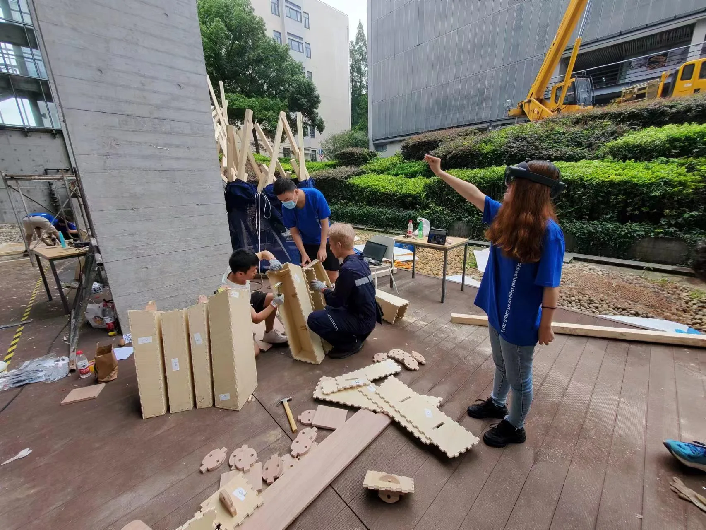
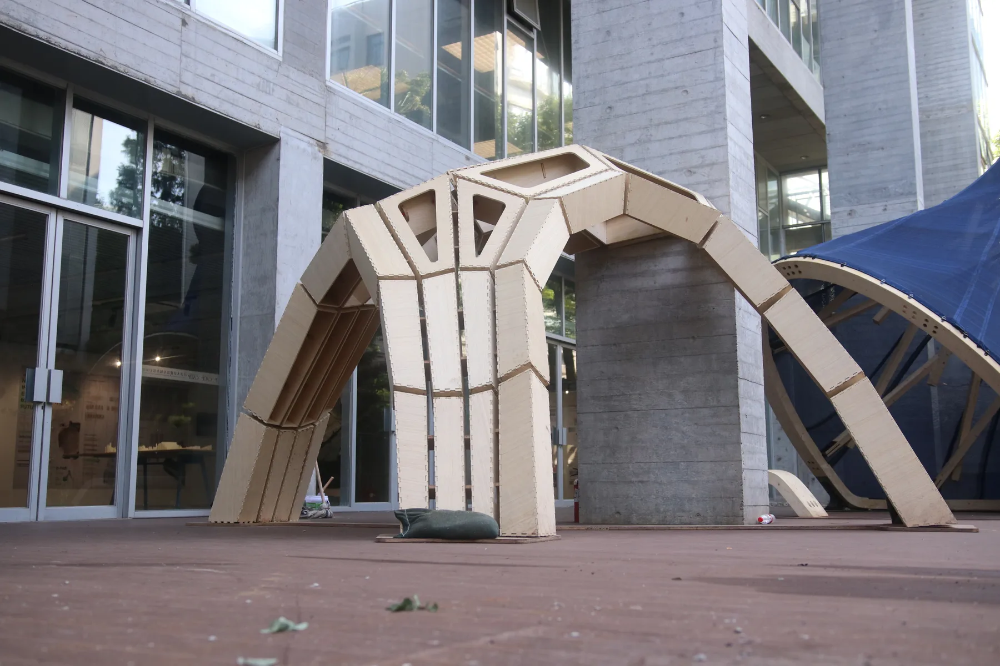

DigitalFUTURES Tongji University, Shanghai
This temporary timber pavilion was constructed by a cohort of 19 students and a team of academics from Taiwan during a ten-day digitalFUTURES workshop. It employs a timber plate assembly system in which components are prefabricated using a laser cutter and friction-fit into modules. These modules are then assembled like bricks to form a compression shell structure.
Construction was guided by an augmented-reality interface linked to a digital twin of the pavilion. The digital model communicated the position and orientation of each component to the assembly team, maintaining accuracy while removing the need for conventional construction drawings. The project continues research into timber plate structures initiated with the Curtin University pavilion in 2020.
- Instructors: Andrei Smolik, Teng-Wen Chang, Ching-Hang Lee
- Year completed: 2023
- Students: Jing Luo, Xuebin Fang, Mengxian Gao, Guan Hong Lu, Zhao Lin Tang, Kefei Wu, Chuang Lyu, Feng Tai Cao, Rui Cao, Yi Fan Wang, Hao Xuan Wu, You Hua Lin, Xuan Ji Chen, Bo Ren Lin, Jia Qi Li, Lu Feng Wang
- Size: 4.4m x 3m x 2.6m


